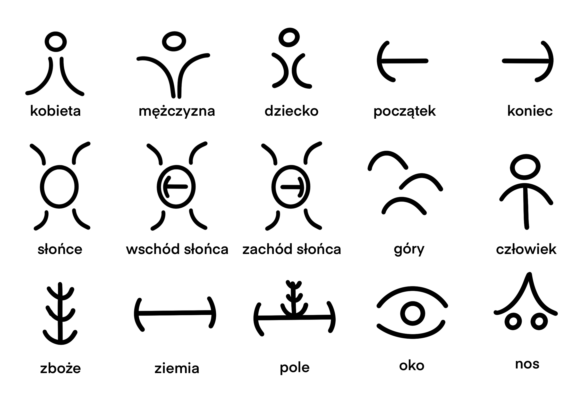
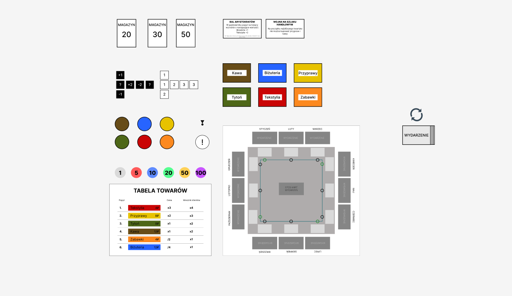

Boundless Magic

Opis
„Boundless Magic” to gra 2D typu endless runner na urządzenia mobilne, w której gracz omija przeszkody, walczy z przeciwnikami oraz próbuje uciec z lochu i osiągnąć jak najlepszy wynik. Gracz może rzucać wiele potężnych zaklęć, które pomagają mu na różne sposoby podczas rozgrywki.
Zaklęcia działają podobnie do combosów. Aby rzucić zaklęcie, gracz musi pokonać na swojej drodze określone typy przeciwników, np. dwóch czerwonych i jednego niebieskiego. Jednakże kolejnośc ich pokonania nie ma znaczenia.
Klknij niżej, żeby zobaczyć więcej szczegółów oraz cały game design document.
Zobacz więcej szczegółów >>Oprogramowanie i narzędzia
Unity | Git
Project Ideogram

Opis
Project Ideogram (nazwa prototypowa) to logiczna gra przygodowa 2D z animacjami rysowanymi ręcznie. Trzon rozgrywki to tłumaczenie wyrazów, pojęć i zdań z języka naturalnego na wymyślone przeze mnie pismo ideogramowe. Gracz musi też łączyć znane już ideogramy ze sobą, aby utworzyć nowe ideogramy i przechodzić do kolejnych poziomów.
Rozwiązywanie zagadek będzie wzbogacone opowieścią o pełnym zawiłości życiu starożytnego człowieka, który przedstawiony będzie na wzór rysunków jaskiniowych. Animacje będą rysowane ręcznie poklatkowo, co nada charakterystyczny styl artystyczny. Fabuła ma pomagać graczowi w zagadkach i czasem naprowadzić go na właściwe rozwiązanie, a także ogólnie wzbogacić całe doświadczenie.
Zobacz więcej szczegółów >>Oprogramowanie i narzędzia
Unreal Engine 5 | Blueprints | Paper2D | Figma | Git | Papier (prototyp)
Warsaw Merchants

Opis
Warsaw Merchants to ekonomiczna gra planszowa dla 2-4 osób. Celem graczy jest kupowanie towarów po jak najniższej cenie, a sprzedawanie po jak najwyższej. Gracze muszą dostosować się do zmieniającego się popytu i cen towarów i odpowiednio dobrać swoją strategię, a czasem liczyć na nieco szczęścia.
Zobacz więcej szczegółów >>Oprogramowanie i narzędzia
Figma | Git | Papier